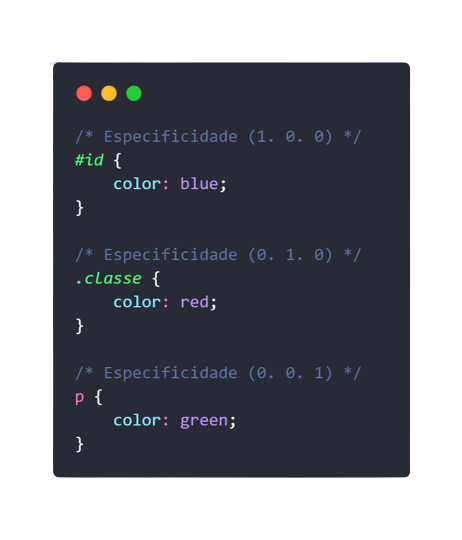

Exemplos:
01
Neste exemplo podemos ver que os três diferentes tipos de estilização afetariam o nosso parágrafo, contudo apenas um deles será categoricamente aplicado. O #id! Podemos afirmar isso, pois os ID’s são os que possuem maior prioridade e possuem o digito, diferente de zero, mais à esquerda.
HTML:
CSS:
02
Já neste exemplo, podemos ver que o parágrafo possui agora não um, mas duas classes e o mesmo ID singular. Contudo, podemos notar que, ao verificarmos empiricamente, a cor que será aplicada ao parágrafo é a cor azul. Isso acontece, pois, neste caso, ao calcular a especificidade, não levaremos em consideração o número de vezes que seletores de mesma prioridade aparecem e sim apenas se aparece uma única vez ou não. Como superar a prioridade de um ID? Mesmo que os ID’s sempre tenham a maior prioridade, existem formas de superá-los neste quesito. Segue exemplo abaixo:
HTML:
CSS:
03
Aqui veremos que a cor vermelha seria a aplicada, pois não estamos apenas usufruindo do nível de prioridade dos ID’s, e sim os juntando também aos níveis de prioridade das classes. Ou seja, assim podemos concluir que:
(1. 1. 0) > (1. 0. 0)
Vejamos mais alguns exemplos.
(0, 2, 0) > (0, 0, 20)
(1, 7, 0) > (0, 5, 0)
(1, 7, 0) > (1, 5, 3)
(1, 7, 3) > (1, 7, 0)
HTML: